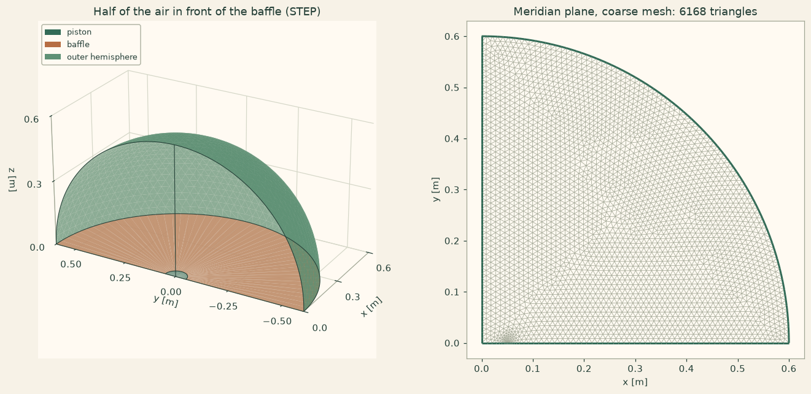

Docs › Examples › Baffled piston radiation
Pressure acoustics, frequency domain · 2D-axisymmetric
Baffled piston radiation
A loudspeaker-sized rigid piston in an infinite wall radiates sound into the half-space in front of it, up to ka = 5.
Run locally with OneSimulation. The example downloads are free. Running them requires an activated runtime. Runtime Alpha 0.2.1a7 · CPython 3.13 on macOS (Apple Silicon), Ubuntu 22.04 (x86-64), and Windows x64. Installation and activation · View pilot plans. Scope of the reference checks.

What it computes
OneSimulation reads the hemisphere of air from a STEP file and solves the Helmholtz equation in the meridian plane with quadratic elements weighted by 2 pi r; the outer hemisphere carries a spherical-wave admittance and the harmonic pressure provider sweeps 50 frequencies on two meshes. Radiation impedance, on-axis pressure and directivity are read from the solution. The script that builds the STEP file comes with the notebook.
What it checks
The radiation impedance follows Rayleigh's formula to 1e-3 rho c over ka = 0.1 to 5, the on-axis pressure matches Rayleigh's surface integral to 1.1e-3 of its peak at ka = 5 (4e-4 at ka = 1), and the level on a half circle at 0.5 m deviates by at most 0.01 dB, through the first null of the directivity.
Geometry
The notebook starts at the import of the CAD file baffled_piston_radiation.step: STEP (AP242), readable by any CAD program, with the names of the faces that the boundary conditions use. Put it next to the notebook.

The geometry script
The script baffled_piston_radiation_geometry.py builds the geometry with the CAD objects of OneSimulation and writes the file. Change a dimension there, run it, and run the notebook again.
"""Geometry of the OneSimulation example "Baffled piston radiation".
Builds the air in front of a rigid piston (radius 50 mm) set in an infinite baffle, a hemisphere of
radius 0.6 m, as half a solid of revolution about the z axis with the CAD objects of OneSimulation
and writes baffled_piston_radiation.step with the faces piston, baffle and outer.
"""
import numpy as np
from onesim.cad.d2 import Path, Profile, Segment
from onesim.cad.d3 import Revolution
piston, outer = 0.05, 0.6
outline = Path(
(0.0, 0.0),
(
Segment((piston, 0.0), name="piston"),
Segment((outer, 0.0), name="baffle"),
Segment((0.0, outer), center=(0.0, 0.0), name="outer"),
Segment((0.0, 0.0), name="axis"),
),
)
Revolution(profile=Profile(outline), angle=np.pi).rotated((0, 0, 1), -np.pi / 2).save(
"baffled_piston_radiation.step"
)The notebook
The complete notebook, cell by cell. Run it to produce the figures and the comparison printout.
A rigid circular piston of radius \(a=50\) mm, set flush in an infinite rigid wall (the baffle), vibrates with normal velocity \(U e^{i\omega t}\) and radiates into the air in front of it. The pressure obeys the Helmholtz equation, which by symmetry is solved in the meridian plane \((r,z)\) of the half-space \(z>0\). The computed region is a hemisphere of radius 0.6 m; on its surface an outgoing spherical wave is assumed.
| boundary | condition | |---|---| | piston, \(z=0\), \(r<a\) | normal velocity \(U\) | | baffle, \(z=0\), \(r>a\) | rigid, \(\partial p/\partial z=0\) | | hemisphere \(\rho=0.6\) m | outgoing spherical wave, \(v_n=p\,(1+1/(ik\rho))/(\rho_0c)\) | | axis \(r=0\) | regular (natural in the axisymmetric form) |
Reference. Lord Rayleigh (The Theory of Sound, Vol. II, §278 and §302) wrote the field of a baffled piston as the integral over its surface,
which is exact at every point in front of the baffle. Far away it becomes \(p\propto D(\theta)\,e^{-ikr}/r\) with the directivity \(D(\theta)=2J_1(ka\sin\theta)/(ka\sin\theta)\), and the mean pressure on the piston gives the radiation impedance \(Z/\rho_0c=1-2J_1(2ka)/(2ka)+i\,2\mathbf H_1(2ka)/(2ka)\) (also L. E. Kinsler et al., Fundamentals of Acoustics, 4th ed., §7.4-7.5).
The spherical-wave condition on the hemisphere is exact for the monopole part of the far field only; for a directive source it leaves a small reflection of order \(1/(k\rho)^2\). A frequency-domain perfectly matched layer would remove it but is not used here.
import numpy as np
from onesim.cad.exchange import load
from onesim.meshing import TriangularMesher
from onesim.numerics.fem import FiniteElement, Lagrange, RevolvedH1SpaceFactory
from onesim.physics.acoustics import (
AcousticHarmonicPressure,
ComplexPressurePencil,
ConstantPressureForms,
PressureAdmittanceBoundary,
PressureTraceSamples,
SampledPressureAdmittanceForms,
SampledPressureVolumeForms,
pressure_space_volume_samples,
)
from onesim.visualization import plots, theme
from scipy.sparse.linalg import spsolve
from scipy.special import j1, struve
theme.set()
c0, rho0, velocity = 343.0, 1.204, 1e-3
impedance = rho0 * c0Geometry and mesh
The STEP file holds half of the hemisphere of air as a solid of revolution; section with the plane \(y=0\) returns its meridian quarter disc. The shortest wavelength of the sweep is 63 mm; the triangles are a sixth of it far away (coarse mesh) or a twelfth (fine mesh) and shrink towards the rim of the piston, where the velocity jumps.
air = load("baffled_piston_radiation.step")
plane = air.section((0, 1, 0))
outer = plane.size[1]
piston_radius = 0.05
ka = np.round(np.arange(0.1, 5.05, 0.1), 2)
omegas = c0 * ka / piston_radius
shortest = 2 * np.pi * c0 / omegas.max()
levels = {"coarse": shortest / 6, "fine": shortest / 12}
meshes = {
level: TriangularMesher(
target_size=h,
size_field=lambda p, h=h: np.minimum(
h, h / 8 + 0.2 * np.linalg.norm(p[:, :2] - [piston_radius, 0.0], axis=1)
),
).generate(plane)
for level, h in levels.items()
}
view = plots.Camera(elevation=25, azimuth=-150)
fig = plots.figure(1, 2, size=(15, 6.5))
plots.geometry(
air,
selection={
"piston": air.boundaries.piston,
"baffle": air.boundaries.baffle,
"outer hemisphere": air.boundaries.outer,
},
labels=False,
camera=view,
title="Half of the air in front of the baffle (STEP)",
ax=fig[0],
)
plots.mesh(
meshes["coarse"],
groups=("all",),
legend=False,
title=f"Meridian plane, coarse mesh: {meshes['coarse'].cell_count} triangles",
ax=fig[1],
)
plots.show()Model
RevolvedH1SpaceFactory makes the quadratic Lagrange space of the meridian plane axisymmetric (weights \(2\pi r\)). The volume forms come from SampledPressureVolumeForms, the boundary traces of a face from the space's trace_data; the hemisphere carries the spherical-wave admittance and the piston the load \(i\omega U\int\phi_i\,\mathrm dS\). AcousticHarmonicPressure solves the 50 frequencies from \(ka=0.1\) to 5.
def solve_piston(level):
"""Pressure field over the sweep on one mesh, and the radiation impedance of the piston."""
mesh = meshes[level]
space = FiniteElement(
element=Lagrange(order=2), provider=RevolvedH1SpaceFactory()
).bind_space(mesh)
volume = ConstantPressureForms(
*SampledPressureVolumeForms(
size=space.dof_count,
samples=lambda: pressure_space_volume_samples(space),
inverse_density=lambda omega, sample: 1 / rho0,
compressibility=lambda omega, sample: 1 / impedance / c0,
)(0.0)
)
traces = {
face: [
PressureTraceSamples(space.cell_dofs[owner], points, weights, basis)
for owner, points, weights, _, basis, _ in map(
space.trace_data, mesh.facets(getattr(plane.boundaries, face))
)
]
for face in ("piston", "outer")
}
piston = SampledPressureAdmittanceForms(
size=space.dof_count,
samples=lambda: iter(traces["piston"]),
admittance=lambda omega, sample: 1.0,
)(0.0) @ np.ones(space.dof_count)
radiation = SampledPressureAdmittanceForms(
size=space.dof_count,
samples=lambda: iter(traces["outer"]),
admittance=lambda omega, sample: (1 + c0 / (1j * omega.real * outer))
/ impedance,
)
result = AcousticHarmonicPressure(
operator=ComplexPressurePencil(
volume, boundary=PressureAdmittanceBoundary(radiation)
),
load=lambda omega: 1j * omega * velocity * piston,
angular_frequencies=omegas,
linear_solver=spsolve,
).run()
return dict(
space=space,
mesh=mesh,
pressure=result.pressure,
dofs=space.dof_count,
z=result.pressure @ piston / (np.pi * piston_radius**2) / velocity,
)
runs = {level: solve_piston(level) for level in levels}
fine = runs["fine"]Reference
Rayleigh's impedance, and his surface integral evaluated with 48 Gauss points across the radius and 96 points around the piston.
k = omegas / c0
rayleigh_impedance = impedance * (
1
- j1(2 * k * piston_radius) / (k * piston_radius)
+ 1j * struve(1, 2 * k * piston_radius) / (k * piston_radius)
)
nodes, weights = np.polynomial.legendre.leggauss(48)
s, phi = np.meshgrid(piston_radius * (nodes + 1) / 2, np.arange(96) * 2 * np.pi / 96)
y, dS = (
np.column_stack((s.ravel() * np.cos(phi.ravel()), s.ravel() * np.sin(phi.ravel()))),
np.tile(weights * piston_radius / 2, 96) * s.ravel() * 2 * np.pi / 96,
)
distance = lambda points: np.sqrt(
(points[:, :1] - y[:, 0]) ** 2 + y[:, 1] ** 2 + points[:, 1:] ** 2
)
rayleigh_field = (
lambda omega, points: 1j
* omega
* rho0
* velocity
/ (2 * np.pi)
* (np.exp(-1j * omega / c0 * distance(points)) / distance(points))
@ dS
)Results
Radiation impedance over the sweep; the pressure on the axis from 20 mm to 0.55 m, through the near-field maxima and minima; and the directivity on a half circle of radius 0.5 m at \(ka=1\), 3 and 5.
for level, run in runs.items():
print(
f"{level} mesh, {run['dofs']} unknowns: largest deviation of Z from Rayleigh over ka = 0.1 ... 5: "
f"{np.max(np.abs(run['z'] - rayleigh_impedance)) / impedance:.1e} rho c"
)
print(" ka Re Z/rho c Rayleigh Im Z/rho c Rayleigh")
for value in (0.5, 1.0, 2.0, 3.0, 4.0, 5.0):
i = np.argmin(np.abs(ka - value))
print(
f"{ka[i]:5.1f} {fine['z'][i].real / impedance:10.5f} {rayleigh_impedance[i].real / impedance:8.5f}"
f" {fine['z'][i].imag / impedance:10.5f} {rayleigh_impedance[i].imag / impedance:8.5f}"
)
axis = np.column_stack((np.zeros(200), np.linspace(0.02, 0.55, 200)))
theta = np.radians(np.linspace(0.0, 90.0, 181))
arc = 0.5 * np.column_stack((np.sin(theta), np.cos(theta)))
shown = {value: int(np.argmin(np.abs(ka - value))) for value in (1.0, 3.0, 5.0)}
on_axis, directivity = {}, {}
for value, i in shown.items():
for level, run in runs.items():
on_axis[level, value] = np.asarray(
run["space"].evaluate(run["pressure"][i], axis)
)
directivity[level, value] = np.asarray(
run["space"].evaluate(run["pressure"][i], arc)
)
exact_axis, exact_arc = rayleigh_field(omegas[i], axis), rayleigh_field(
omegas[i], arc
)
print(
f"ka = {value:.0f}: on-axis pressure, largest deviation / peak: coarse "
f"{np.max(np.abs(on_axis['coarse', value] - exact_axis)) / np.max(np.abs(exact_axis)):.1e}, fine "
f"{np.max(np.abs(on_axis['fine', value] - exact_axis)) / np.max(np.abs(exact_axis)):.1e}; "
f"level on the half circle, largest deviation: coarse "
f"{np.max(np.abs(20 * np.log10(np.abs(directivity['coarse', value] / exact_arc)))):.2f} dB, fine "
f"{np.max(np.abs(20 * np.log10(np.abs(directivity['fine', value] / exact_arc)))):.2f} dB"
)Figure
Top: the sound pressure level in the meridian plane at \(ka=5\) with its side lobe, and the radiation impedance. Bottom: the pressure amplitude along the axis and the directivity at 0.5 m, each against Rayleigh's integral; the far-field directivity \(|D(\theta)|\) is drawn dotted.
i = shown[5.0]
x, z = np.asarray(fine["mesh"].coordinates).T
level = 20 * np.log10(
np.abs(
np.asarray(
fine["space"].evaluate(fine["pressure"][i], fine["mesh"].coordinates)
)
)
/ 2e-5
)
far_field = lambda value: np.abs(
2 * j1(value * np.sin(theta) + 1e-12) / (value * np.sin(theta) + 1e-12)
)
fig = plots.figure(2, 2, size=(16, 12))
plots.heatmap(
x,
z,
level,
triangles=np.asarray(fine["mesh"].cells),
limits=(level.max() - 40, level.max()),
contours=8,
label="sound pressure level [dB]",
xlabel="r [m]",
ylabel="z [m]",
title=f"ka = 5 ({omegas[i] / (2 * np.pi):.0f} Hz), piston velocity 1 mm/s",
ax=fig[0],
)
plots.line(
ka,
{
"Re Z / rho c": fine["z"].real / impedance,
"Im Z / rho c": fine["z"].imag / impedance,
},
reference={
"Re Z / rho c": rayleigh_impedance.real / impedance,
"Im Z / rho c": rayleigh_impedance.imag / impedance,
},
xlabel="ka",
ylabel="normalised radiation impedance",
title="Radiation impedance (dashed: Rayleigh)",
legend="lower right",
ax=fig[1],
)
plots.line(
axis[:, 1],
{f"ka = {value:.0f}": np.abs(on_axis["fine", value]) for value in shown},
reference={
f"ka = {value:.0f}": np.abs(rayleigh_field(omegas[i], axis))
for value, i in shown.items()
},
xlabel="distance from the piston z [m]",
ylabel="|p| [Pa]",
title="Pressure on the axis (dashed: Rayleigh integral)",
legend="upper right",
ax=fig[2],
)
plots.line(
np.degrees(theta),
{
f"ka = {value:.0f}": np.abs(
directivity["fine", value] / directivity["fine", value][0]
)
for value in shown
},
reference={
f"ka = {value:.0f}": np.abs(
rayleigh_field(omegas[i], arc) / rayleigh_field(omegas[i], arc[:1])
)
for value, i in shown.items()
},
points={
f"ka = {value:.0f}": (np.degrees(theta[::6]), far_field(value)[::6])
for value in shown
},
scale="logy",
ylimits=(1e-3, 1.5),
xlabel="angle from the axis [deg]",
ylabel="|p(theta)| / |p(0)| at 0.5 m",
title="Directivity (dashed: Rayleigh integral, dots: far field)",
legend="lower left",
ax=fig[3],
)
plots.show()Going further
Make the baffle finite in baffled_piston_radiation_geometry.py (a disc with air behind it) and write the STEP file again to see diffraction at its edge fill the nulls; or replace the uniform piston velocity by a flexible cone with a velocity profile over the radius.